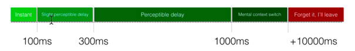

Rendimiento
La palabra lean.
¿qué significa la palabra lean? "Lean" se usa para describir tanto la naturaleza del producto que creamos como el proceso de crearlo. Mantener un producto lean significa eliminar cualquier cosa que pueda impedir su rendimiento.
En el caso de un sitio web, esto significa mantener un enfoque claro en los elementos que agregan valor al sitio y asegurarse de que estos elementos están optimizados para proporcionar la mejor experiencia posible al usuario. Del mismo modo, cuanto más practiquemos la construcción de sitios web optimizados y ligeros, más ligeros y eficiente será el proceso, convirtiéndose en parte de nuestro ADN en el despliegue de sitios.
hay malas noticias. Desde una perspectiva de rendimiento, hay muchas cosas que se puede hacer mal -y probablemente están haciendose mal- cuando se trata de la construcción de sitios web! Pero bueno, también hay buenas noticias: hay muchas maneras relativamente fáciles de solucionar esos problemas.
La psicología de la velocidad
¿Por qué la gente deja un sitio web? Podría haber muchas razones, como dificultades para encontrar lo que están buscando. Pero hay una buena probabilidad de que los usuarios abandonen un sitio porque lo percibe demasiado lento para cargar. En esta sección, quiero llamar la atención sobre la psicología, y cómo desempeña un papel importante en nuestra percepción de la velocidad y el rendimiento.
¿Qué es "Demasiado Lento", y Cuándo los Sitios Web "Sienten" Lentos?
Como el psicólogo Jeremy Dean señala, el tiempo no vuela cuando nos estamos divirtiendo. ¿Cuándo experimentamos diversión? Claramente, no es cuando tenemos que esperar. ¿A quién le gusta esperar, especialmente en este mundo de constantes noticias y respuestas? Hoy en día, las personas desean satisfacción instantánea y tienen muy poca paciencia. Amazon ofrece un día de entrega; Un taxi no debe tardar más de diez minutos en llegar. Nos hemos convertido en una sociedad donde la espera ya no es aceptable, especialmente cuando se trata del mundo en línea. Cuando visitamos sitios web, si no recibimos una respuesta instantánea, el sitio de un competidor está a sólo un clic de distancia.
El problema con la discusión de la velocidad del sitio web es que la percepción de la velocidad es muy subjetiva y muy contextual. Lo que se siente lento para mí no puede sentirse lento, digamos, a mi padre o a mi abuela. Todos tenemos diferentes expectativas.
La Primera Ley de Servicio de Maister
David Maister, ex profesor de la Harvard Business School, elaboró una fórmula para la ley del servicio. La fórmula -el resultado de varios años de investigación- proporciona una medida de cómo esperar un servicio específico afecta a las percepciones de los clientes tanto del servicio prestado como del producto real.
La fórmula de Maister afirma que Satisfacción = Percepción - Expectativa.
En el contexto del rendimiento web y el suministro de contenido a los visitantes del sitio, esta fórmula plantea las siguientes preguntas:
- ¿Qué fue realmente servido y presentado al visitante, y si el contenido satisfizo el objetivo del usuario?
- ¿Qué percibió el visitante?
- ¿Qué esperaba realmente el visitante?
Satisfacción
Imagine una situación en la que visite una página y un indicador de carga se mueva lentamente del 5% al 10%. Esperará que tarde un tiempo en alcanzar el 100%. Si el porcentaje inesperadamente comienza a subir rápidamente al 95% y luego al 100%, estarás satisfecho y feliz, porque tu percepción superó tus expectativas. Por el contrario, si el indicador de carga sube más lentamente de lo esperado, experimentará una sensación desagradable.
En pocas palabras, los visitantes del sitio web están satisfechos cuando su percepción excede su expectativa, e insatisfechos cuando ocurre lo contrario.
Percepción
Tenemos que reconocer que la percepción de la velocidad del sitio web es un sentimiento, algo que es muy subjetivo.
Por ejemplo, la percepción se refiere a la rapidez con que el usuario piensa que es su sitio web, en lugar de lo rápido que realmente es. La mayoría de las veces, eso es casi más importante que la velocidad real de su sitio web.
Generalmente, la percepción de que algo es lento lleva asociaciones negativas: desagradecimiento, aburrimiento, irritación, confusión, etc. La velocidad, por otra parte, se asocia con el éxito, dando por resultado menos frustración e irritación, especialmente donde el usuario se mantiene informado del progreso.
Dado que el tiempo de carga de su sitio web puede ser percibido como lento, es importante asegurarse de que el contenido se entrega lo más rápido posible, o al menos que, durante cualquier retraso, el usuario se mantenga ocupado y distraído, de modo que la experiencia sea no percibir esa lentitud.
Hay un gran ejemplo que ilustra el problema de la percepción. El aeropuerto de Houston recibió un montón de quejas de los pasajeros que esperaron demasiado tiempo para conseguir su equipaje. En lugar de hacer que el duro trabajo del personal del aeropuerto trabaje aún más rápido para sacar el equipaje, el aeropuerto decidió cambiar la forma en que los pasajeros percibían el tiempo de espera para recoger su equipaje. Aumentaron la distancia de la puerta de llegada a la reclamación de equipaje seis veces. Mientras que el personal del aeropuerto estaba ocupado moviendo todo el equipaje a la reclamación de equipaje, los pasajeros se mantuvieron ocupados caminando. El tiempo para que las bolsas salieran no había cambiado. Sin embargo, como resultado del desempeño percibido, las quejas comenzaron a caer dramáticamente.
Espectación
En el contexto del desempeño, al atender a los clientes, es importante administrar y cuidar sus expectativas. Disney ha hecho un trabajo fabuloso en la gestión de expectativas de modo que el cliente recibe un resultado positivo en sus parques de atracciones. Tienen colas que muestran los tiempos de espera, con una estimación bastante pesimista, para que los clientes lleguen al frente de la línea en un tiempo mucho más corto de lo previsto. Como resultado, el cliente se siente más positivo.
Entonces, ¿cómo se traduce esto a los visitantes del sitio web de servicios? Debemos establecer expectativas claras manteniéndoles informados sobre el progreso de su tarea. Mostrarles el contenido que quieren ver de la manera más rápida posible; Y, si se requiere espera, mostrar barras de progreso u otros indicadores para asegurarles que el sitio web sigue respondiendo y que recibirán el contenido que solicitaron.
"Respeto" es un factor importante en la satisfacción del cliente. En última instancia, el rendimiento es sobre el respeto. Cuanto mayor es el respeto mostrado a los clientes, más probabilidades tienen de experimentar satisfacción.
Tasa de abandono: cuando los usuarios deciden marcharse
Todos hemos abandonado un servicio antes. De pie en una línea que no se mueve nos hará impacientes, hasta que nos damos por vencidos. Dejamos la cola y no terminamos la tarea que realmente queríamos lograr. Experimentamos frustración y decepción. Lo mismo puede suceder con los sitios web. Si los usuarios consideran que su sitio web es útil y rápido, se quedarán y terminarán su tarea. De lo contrario, dejarán su sitio sin completar su tarea. Por lo tanto, la tasa de abandono es probablemente el juicio más seguro y más honesto que se puede obtener de sus usuarios sobre lo satisfechos que están con su servicio.
Hay muchas estadísticas y estudios de casos que demuestran que el comportamiento de abandono de los usuarios se debe a un mal rendimiento. Los sitios web de comercio electrónico son los más afectados. La dura competencia obliga a los propietarios de sitios a prestar mucha atención a la velocidad y la ejecución. Si su carrito de compras no se carga lo suficientemente rápido, sus usuarios podrían simplemente trasladarse al sitio de un competidor.
Aquí hay algunas estadísticas y números del mundo real que demuestran cuán importante es la velocidad en un mundo de inestimable instantaneidad:
- Amazon calculó que una desaceleración de la carga de la página de sólo un segundo podría costar 1.600 millones de dólares en ventas cada año
- Casi el 40% de los compradores en línea abandonan un sitio web que tarda más de 3 segundos en cargar
- El 79% de los compradores en línea no volverá a un sitio web después de una experiencia decepcionante debido al mal rendimiento
- Un retraso de 1 segundo en el tiempo de carga de la página equivale a un 11% menos de visitas a la página, una disminución del 16% en la satisfacción del cliente y un 7% de pérdida en las conversiones
Tiempo de respuesta
El rendimiento web percibido implica cómo nosotros experimentamos y respondemos al rendimiento de un sistema.
El siguiente gráfico muestra cómo los diferentes tiempos de respuesta de los sistemas afectan nuestro cerebro, y cómo nuestro cerebro se ocupa de ellos, lo que resulta en diferentes emociones:
- Sentimos una percepción instantánea alrededor de un retardo de 100ms
- Se produce un ligero retraso perceptible entre 100 ms y 300 ms
- Definitivamente nos sentimos un retraso perceptible en 1000ms (1s)
- Después de 1 segundo, sentimos que comienza un cambio de contexto mental cuando el usuario abandona el propósito original que lo llevo al sitio. Lo más probable es que ya no están interesados en terminar su tarea inicial.
- Después de 10 segundos y más, la tasa de abandono aumenta y el usuario tiende a abandonar el sitio
Mientras que cada usuario tendrá una tolerancia diferente para el retraso, podemos esperar una escala de percepción para un usuario típico basado en los datos mencionados anteriormente.
La investigación realmente define la necesidad de evitar cualquier tipo de demora tanto como sea posible. Ilya Grigorik, un defensor del rendimiento web en Google, lo llama el desafío "tiempo para el cristal" de 1000ms. Con el fin de satisfacer plenamente las expectativas de su usuario, tiene alrededor de 1000ms para que su contenido viaje desde su servidor al cristal del usuario (la pantalla).
Si desea lograr una experiencia rápida para sus usuarios, debe comprender qué aspectos pueden perjudicar a dicha meta.